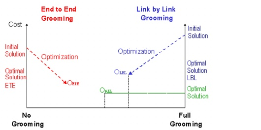

Grooming DCL to OCH Traffic > Optimization Algorithms: Descriptions > ETE vs. LBL Grooming
ETE vs. LBL Grooming
Both ETE and LBL start with an initial solution and perform cost-driven improvements as described in the previous sections. As shown in the following diagram, these algorithms start with opposite solutions (ETE with no intermediate grooming, LBL with full intermediate grooming) and gradually converge towards each other during optimization. These algorithms can result in different local optima (OETE and OLBL) compared to the global optimum OAll.
Figure 8-15 ETE vs. LBL Grooming

Which Solution Should You Use?
There is no "absolute better" approach for a situation: a solution's applicability depends on traffic levels, multiplex factors, and the cost structure used for the scenario. Table 8-11 lists the parameter values that favor a specific approach. In general, use the LBL-based approach if your parameter value indicates a solution that involves extensive grooming; use the ETE-based approach if your parameter value indicates a solution that involves little grooming.
Note—LBL optimization is more calculation-intensive than ETE optimization, especially for large networks and high traffic levels. Therefore, use ETE optimization for a first approximation of grooming level and associated network cost.
| Home © 1987-2007 OPNET Technologies, Inc. All Rights Reserved. This software may be covered by one or more U.S. Patents. See complete patent notice in the Legal Notices section. OPNET Support Center |